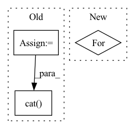

Pattern ID :1227
Before Change
content_code = self.content_embedding(content_img_id)
style_code = self.style_embedding(style_img_id)
class_code = self.class_embedding(class_id)
if self.training and self.config["content_std"] != 0:
noise = torch.zeros_like(content_code)
noise.normal_(mean=0, std=self.config["content_std"])
regularized_content_code = content_code + noise
else:
regularized_content_code = content_code
if self.training and self.config["style_std"] != 0:
noise = torch.zeros_like(style_code)
noise.normal_(mean=0, std=self.config["style_std"])
regularized_style_code = style_code + noise
else:
regularized_style_code = style_code
class_with_style_code = torch.cat( (class_code, regularized_style_code), dim=1)
class_with_style_code = self.class_style_modulation(class_with_style_code)
adain_params = self.modulation(class_with_style_code)
generated_img = self.decoder(regularized_content_code, adain_params)After Change
def forward(self, content_img, style_code):
x = self.from_rgb(content_img)
for block in self.encoder:
x = block(x)
content_code = x
if self.training and self.config["content_std"] != 0:In pattern: SUPERPATTERN
Frequency: 4
Non-data size: 3
Instances Fragment ID: 3672889
Project Name: avivga/overlord
Commit Name: fa020664bf0dcbd11e72953117146be2cdbc3b48
Time: 2020-05-29
Author: avivga@gmail.com
File Name: model/modules.py
M Class Name: Generator
N Class Name: Generator
M Method Name: forward(3)
N Method Name: forward(4)
M Parent Class: nn.Module
N Parent Class: nn.Module
M File Name: model/modules.py
N File Name: model/modules.py
M Start Line: 34
M End Line: 67
N Start Line: 52
N End Line: 76
Before Change
// Dim 1 computations.
pers1_reshaped = pers1.permute(1,0,2).reshape(pers1.shape[1],-1)
pers1_mask = ~((pers1_reshaped==0).all(-1))
nodes_idx_dim1 = edge_index[:,pers1_mask]
x0_dim1 = torch.cat(
[ x[nodes_idx_dim1[0,:],:], x[nodes_idx_dim1[1,:],:], pers1_reshaped[pers1_mask] ], 1)
x_dim1 = self.dim1_fn(x0_dim1, edge_slices, mask = pers1_mask)
else:
x_dim1 = None
After Change
pers1_reshaped = pers1.permute(1, 0, 2).reshape(pers1.shape[1], -1)
pers1_mask = ~((pers1_reshaped == 0).all(-1))
x1 = pers1_reshaped[pers1_mask]
for layer in self.set_fn1:
if isinstance(layer, DeepSetLayerDim1):
x1 = layer(x1, edge_slices, mask=pers1_mask)
else:
x1 = layer(x1) Fragment ID: 3672905
Project Name: borgwardtlab/togl
Commit Name: f6de25e187c5a78974edd07cec7fc20c675bbbc6
Time: 2021-02-02
Author: max.horn@bsse.ethz.ch
File Name: topognn/layers.py
M Class Name: SimpleSetTopoLayer
N Class Name: SimpleSetTopoLayer
M Method Name: forward(3)
N Method Name: forward(3)
M Parent Class: nn.Module
N Parent Class: nn.Module
M File Name: topognn/layers.py
N File Name: topognn/layers.py
M Start Line: 222
M End Line: 261
N Start Line: 238
N End Line: 270
Before Change
out is the output of siamese network (bs,n_vertices,n_vertices)
bs = out.shape[0]
n_vertices = out.shape[1]
ide = torch.arange(n_vertices)
target = torch.cat( [ide for _ in range(bs)]) .to(self.device)
out_reshape = out.view(-1,n_vertices)
return self.loss(out_reshape,target)
After Change
outputs is the output of siamese network (bs,n_vertices,n_vertices)
for out in outputs:
n_vertices = out.shape[0]
ide = torch.arange(n_vertices)
target = ide.to(self.device)
return self.loss(out, target) Fragment ID: 3672906
Project Name: mlelarge/graph_neural_net
Commit Name: 18f93d0ede0a60e91344638014eae448e6f89bf9
Time: 2020-03-08
Author: waissfowl@gmail.com
File Name: toolbox/losses.py
M Class Name: triplet_loss
N Class Name: triplet_loss
M Method Name: forward(2)
N Method Name: forward(2)
M Parent Class: nn.Module
N Parent Class: nn.Module
M File Name: toolbox/losses.py
N File Name: toolbox/losses.py
M Start Line: 15
M End Line: 20
N Start Line: 15
N End Line: 21
Before Change
o_phot = self.mt_phot.forward(o)
o_x = self.mt_x.forward(o)
o_y = self.mt_y.forward(o)
o_z = self.mt_z.forward(o)
o_not_bg = torch.cat( (o_p, o_phot, o_x, o_y, o_z), 1)
if self.ch_out == 5:
o = o_not_bg
After Change
o = self.unet_union.forward(o)
o_head = []
for i in range(self.ch_out):
o_head.append(self.mt_heads[i].forward(o))
o = torch.cat(o_head, 1)
Apply the final non-linearities Fragment ID: 3672907
Project Name: turagalab/decode
Commit Name: 9c0e6c95a59bb121b9749cd281e4390a185ca1d9
Time: 2019-11-30
Author: gitdev@LRM.PHOTO
File Name: deepsmlm/neuralfitter/models/unet_param.py
M Class Name: DoubleMUnet
N Class Name: DoubleMUnet
M Method Name: forward(2)
N Method Name: forward(2)
M Parent Class: nn.Module
N Parent Class: nn.Module
M File Name: deepsmlm/neuralfitter/models/unet_param.py
N File Name: deepsmlm/neuralfitter/models/unet_param.py
M Start Line: 336
M End Line: 357
N Start Line: 340
N End Line: 347